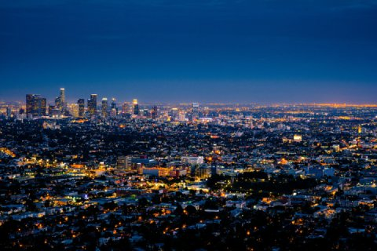
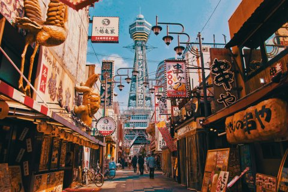
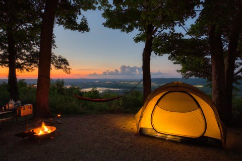

| 分類 | 縮圖 | 標題與描述 | 拍攝日期 |
|---|---|---|---|
| 城市風景 | 
主題:Los Angeles by Night 地點:Griffith Observatory, Los Angeles, United States |
燈火璀璨的城市夜景
從高處俯瞰城市，萬家燈火在夜幕中閃耀，街道與建築形成錯綜的光網。遠方的高樓勾勒出天際線，整座城市宛如不眠的星海，象徵著現代都市的繁華與節奏。 |
2015/10/13 |
| 
地點:Osaka, Japan |
熱鬧的街頭風情
白天的街道上掛滿招牌與燈籠，五彩繽紛、充滿活力。人們穿梭其中，背景矗立著具代表性的高塔，展現出城市濃厚的在地文化與商業氛圍。整張照片充滿日常生活的熱度與人情味。 |
2020/05/14 | |
| 遊山玩水 | |||
| 自然風景 | 
主題:The camp 地點:State Park Lane, Bagley, Wyalusing, WI, USA |
森林中的寧靜夜營
在夕陽餘暉下，一頂發著暖光的帳篷靜靜佇立於林間。旁邊的營火燃燒著，散發出橙色光芒，映照出樹影與遠方的湖泊。整個畫面瀰漫著寧靜與溫馨，讓人感受到與自然相處的平和時光。 |
2021/09/15 |